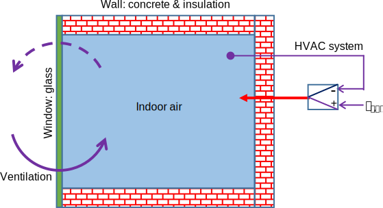
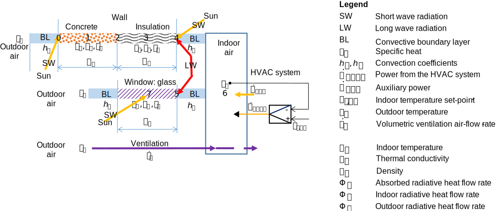
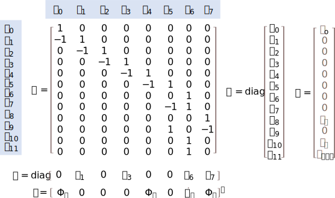

Modeling#

The theory of heat transfer in buildings is examplified on a toy model. The model is a thermal circuit with thermal capacities in some of the nodes.
Objectives:
Analyse a cubic building with 5 identical walls & a transparent wall (glass window), air infiltration, and HVAC system controlling the indoor air temperature.
Model the heat transfer in the building by a thermal circuit.
Obtain the mathematical model as a system of Differential Algebraic Equations (DAE) from the thermal circuit.
Transfrom the system of DAE into state-space representation.
import numpy as np
import pandas as pd
import matplotlib.pyplot as plt
import dm4bem
Physical analysis#
Description of the building#

Figure 1. Simple ventilated room (5 two-layer walls and 1 glass window) equiped with an HVAC control system which acts as a proportional controller.
Let’s consider a cubic building with an HVAC systems acting as a proportional controller.
The dimensions and surface areas of the building are:
\(l=3 \: \mathrm{m}\) - edge length of the cube;
\(S_g=l^2\) - surface area of the glass window;
\(S_c = S_i = 5 \times S_g\) - surface area of the 5 (concrete and insulation) walls.
l = 3 # m length of the cubic room
Sg = l**2 # m² surface area of the glass wall
Sc = Si = 5 * Sg # m² surface area of concrete & insulation of the 5 walls
Thermo-physical properties#
The thermophysical properties of the air (in SI units) are:
air = {'Density': 1.2, # kg/m³
'Specific heat': 1000} # J/(kg·K)
pd.DataFrame(air, index=['Air'])
| Density | Specific heat | |
|---|---|---|
| Air | 1.2 | 1000 |
The thermophysical properties (thermal conductivities, densities and specific heat capacities) and the geometry (widths and surface areas) of the three materials (i.e., concrete, insulation, glass) in SI units are:
concrete = {'Conductivity': 1.400, # W/(m·K)
'Density': 2300.0, # kg/m³
'Specific heat': 880, # J/(kg⋅K)
'Width': 0.2, # m
'Surface': 5 * l**2} # m²
insulation = {'Conductivity': 0.027, # W/(m·K)
'Density': 55.0, # kg/m³
'Specific heat': 1210, # J/(kg⋅K)
'Width': 0.08, # m
'Surface': 5 * l**2} # m²
glass = {'Conductivity': 1.4, # W/(m·K)
'Density': 2500, # kg/m³
'Specific heat': 1210, # J/(kg⋅K)
'Width': 0.04, # m
'Surface': l**2} # m²
wall = pd.DataFrame.from_dict({'Layer_out': concrete,
'Layer_in': insulation,
'Glass': glass},
orient='index')
wall
| Conductivity | Density | Specific heat | Width | Surface | |
|---|---|---|---|---|---|
| Layer_out | 1.400 | 2300.0 | 880 | 0.20 | 45 |
| Layer_in | 0.027 | 55.0 | 1210 | 0.08 | 45 |
| Glass | 1.400 | 2500.0 | 1210 | 0.04 | 9 |
Radiative properties#
The radiative properties of the surfaces are:
long wave emmisivity of concrete (between normal and rough) and pyrex glass;
short wave absortivity of solar radiation of white smooth surfaces;
short wave transmittance of window glass (thickness of 4 mm);
short wave absortivity and transmittance of reflective blue window glass.
# radiative properties
ε_wLW = 0.85 # long wave emmisivity: wall surface (concrete)
ε_gLW = 0.90 # long wave emmisivity: glass pyrex
α_wSW = 0.25 # short wave absortivity: white smooth surface
α_gSW = 0.38 # short wave absortivity: reflective blue glass
τ_gSW = 0.30 # short wave transmitance: reflective blue glass
The Stefan-Boltzmann constant is:
σ = 5.67e-8 # W/(m²⋅K⁴) Stefan-Bolzmann constant
print(f'σ = {σ} W/(m²⋅K⁴)')
σ = 5.67e-08 W/(m²⋅K⁴)
Convection coefficients#
Conventional values for the convection coeficients for indoor and outdoor convection in W/(m²⋅K) are:
h = pd.DataFrame([{'in': 8., 'out': 25}], index=['h']) # W/(m²⋅K)
h
| in | out | |
|---|---|---|
| h | 8.0 | 25 |
Thermal network#
Thermal networks (or circuits) are weighted directed graphs in which:
the nodes (or vertices) represent temperatures, \(\theta_i\), of geometrical points, lines, surfaces or volumes;
the oriented branches (or edges) represent thermal heat flow rates, \(q_j\), between the temperature nodes.

Figure 2. Basic thermal network.
A thermal network has at least one oriented branch, \(q\), and one node, \(\theta\).
In a node, there are a heat capacity, \(C_i\), (which can be positive or zero) and a heat flow rate source, \(\dot Q_i\), (which can be zero).
On a branch, there are a thermal conductane, \(G_j > 0\), (which needs to be strictely pozitve) and a temperature source, \(T_j\) (which can be zero).
The problem of analysis of thermal circuits (or the simulation problem, or the direct problem) is:
given:
incidence matrix \(A\) which indicates how the nodes are connected by oriented branches;
conductance diagonal matrix \(G\);
capacity diagonal matrix \(C\);
temperature source vector \(b\);
heat flow source vector \(f\);
find the temperature vector \(\theta\) and the flow rate vector \(q.\)
For the toy model shown in Figure 1, heat transfert is:
through the walls (concrete and insulation),
through the glass window,
by ventilation,
from indoor auxiliary sources,
from the HVAC system.
The HVAC system is modelled as a proportional controller. There is long wave radiative exchange between the wall and the glass window. The sources are:
temperature sources:
outdoor atmospheric air;
indoor air temperature setpoint;
flow rate sources:
solar radiation on the outdoor and the indoor walls;
auxiliary heat gains in the thermal zone.

Figure 3. Heat processes for the cubic building shown in Figure 1.

Figure 4. Thermal circuit for the cubic building shown in Figure 1 and the heat processes shown in Figure 3. Note: space discretization of the walls is done for simplicity.
Figure 4 shows the models of:
concrete & insulation wall: in red;
glass window: in green;
ventilation: in magenta;
indoor volume: in blue (conductances 6 & 7 for convection; conductance 5 for long wave radiation between the walls and the glass window);
HVAC system: in black.
The sources are:
\(T_o\) - outdoor temperature, °C;
\(T_{i,sp}\) - indoor air controlled at the setpoint temperaure for the indoor air, °C;
\(\Phi_o\) - solar radiation absorbed by the outdoor surface of the wall, W;
\(\Phi_i\) - solar radiation absorbed by the indoor surface of the wall, W;
\(\dot{Q}_a\) - auxiliary heat gains (i.e., occupants, electrical devices, etc.), W;
\(\Phi_a\) - solar radiation absorbed by the glass, W.
Note: The known values, i.e. the elements of the circuit (the conductances \(G\) and capacities \(C\)) and the sources (of temperature \(T\) and of flow rate \(\Phi\) or \(\dot{Q}\)) are noted in uppercase (majuscule) letters. The unknow variables, i.e. the temperatures in the nodes \(\theta\) and the flow rates on the branches \(q\), are noted in lowercase (minuscule) letters.
Thermal conductances#
Conduction#
The conductances 1, 2, 3, and 4 of the thermal circuit from Figure 3 model the heat transfer by conduction. Conduction conductances, in W/K, are of the form:
where:
\(\lambda\) - thermal conductvity, W/(m⋅K);
\(w\) - width of the material, m;
\(S\) - surface area of the wall, m².
# conduction
G_cd = wall['Conductivity'] / wall['Width'] * wall['Surface']
pd.DataFrame(G_cd, columns=['Conductance'])
| Conductance | |
|---|---|
| Layer_out | 315.0000 |
| Layer_in | 15.1875 |
| Glass | 315.0000 |
Convection#
The conductances 0, 6 and 7 model the heat transfer by convection. Convection conductances, in W/K, are of the form:
where:
\(h\) is the convection coefficient, W/(m²⋅K);
\(S\) - surface area of the wall, m².
Table 1. Surface thermal conductances (adapted after Dal Zotto et al. 2014, p. 261)
Type of wall |
Indoor surface |
Outdoor surface |
|---|---|---|
\(h_i\)/[W/(m²·K)] |
\(h_o\)/[W/(m²·K)] |
|
Vertical (tilt > 60°): horizontal flow rate |
7.7 |
25 |
Horizontal (tilt < 60°): vertical flow rate |
||
- upward heat flow rate |
10 |
25 |
- downward heat flow rate |
5.9 |
25 |
# convection
Gw = h * wall['Surface'][0] # wall
Gg = h * wall['Surface'][2] # glass
Long wave radiation#
View factors inside the building#
The majority of methods used for modelling the radiative heat exchange use the view factors between surfaces. The view factor \(F_{i,j}\) is defined as the proportion of radiation leaving surface \(i\) that is intercepted by surface \(j\). The view factors can be estimated by differential areas or for different configurations of surfaces (Howell et al. 2021).
The view factors need to satisfy the summation rule
and the reciprocity theorem:
where \(S_{i}\) and \(S_{j}\) are the surface areas.
For a convex surface \(i\), the self-viewing factor is zero,
Two simplified relations are used to calculate the view factors for buildings.
In the first one, the view factors are defined by:
where \(S_{T} = \sum_{j=0}^{n-1} S_j\), i.e. the surface \(S_j\) is included in the total surface \(S_T\). In this method, the reciprocity theorem is satisfied, $\(F_{i,j} S_i = F_{j,i} S_j = \frac{S_i S_j}{S_T}\)$ but summation rule isn’t,
In this case, the heat balance for each surface would be wrong.
In the second one, the view factors are defined by:
where \(S_{T} = \sum_{j=0}^{n-1} S_j\), i.e. the surface \(S_i\) is not included in the total surface \(S_{T,i} = S_T - S_i\).
In this case, the reciprocty theorem is generally not respected:
but the summation rule is respected:
Let’s define the view factors by:
# view factor wall-glass
Fwg = glass['Surface'] / concrete['Surface']
Note: The view factor between two surfaces, \(j,k\) that are in the same plane (e.g. a window and a wall) is zero,
Therefore the total surface \(S_{T,i}\) should be:
i.e. the surfaces \(S_k\) in the same plane with the surface \(S_i\) are not included in \(S_{T,i}\).
View factor between tilted outdoor walls and sky#
The view factor between the top surface of finite wall \(w\) tilted relative to an infinite plane of the ground \(g\) is (Widén, Munkhammar, 2019, eq. 4.18):
Therefore, the view factor between the tilted wall \(w\) and the sky dome \(s\) is (Widén, Munkhammar, 2019, eq. 4.17):
Thermal network for long wave radiation#
The long-wave heat exchange between surfaces may be modelled by using the concept of radiosity and then linearizing the radiative heat exchange.

For two surfaces, shown by temperature nodes 4 and 5 in Figure 4 and by nodes 1 and 2 in Figure 5, the conductances, in m², for radiative heat exchange expressed by using the emmitance (or the radiant excitance) of the black body, the radiosity, and the reciprocity of view factors are:
where:
\(\varepsilon_1\) and \(\varepsilon_2\) are the emmisivities of the surfaces 1 and 2;
\(S_1\) and \(S_2\) - areas of the surfaces 1 and 2, m²;
\(F_{1,2}\) - view factor between surfaces 1 and 2.
The net flows leaving the surfaces 1 and 2 are:
respectively, where:
\(M^o_1\) and \(M^o_2\) are the emmitances of the surfaces 1 and 2 when emmiting as black bodies, \(M^o = \sigma T^4\), W/m²;
\(J_1\) and \(J_2\) - radiosities of surfaces 1 and 2, W/m²;
\(G^r_1\) and \(G^r_2\) - conductances for long wave radiative heat exchange, m².
The net flow between surfaces 1 and 2 is:
In order to express the long-wave radiative exchange as a function of temperature differences, a linearization of the difference of temperatures \(T_1^4 - T_2^4\) may be used:
where the mean temperature \(\bar{T}\), measured in kelvin, is:
The evaluation of mean temperaure, \(\bar{T}\), requires the values of the surface tempetratures, \(T_1\) and \(T_2\) (in kelvin). An initial guess can be used (and then an iterative process, for a more precise evaluation).
After linearization, the conductances, in W/K, for radiative heat exchange are:
# long wave radiation
Tm = 20 + 273 # K, mean temp for radiative exchange
GLW1 = 4 * σ * Tm**3 * ε_wLW / (1 - ε_wLW) * wall['Surface']['Layer_in']
GLW12 = 4 * σ * Tm**3 * Fwg * wall['Surface']['Layer_in']
GLW2 = 4 * σ * Tm**3 * ε_gLW / (1 - ε_gLW) * wall['Surface']['Glass']
The equivalent conductance, in W/K, for the radiative long-wave heat exchange between the wall and the glass window is:
GLW = 1 / (1 / GLW1 + 1 / GLW12 + 1 / GLW2)
Note: Resistances in series or parallel can be replaced by their equivalent resistance.
Advection#
The volumetric flow rate of the air, in m³/s, is:
where:
\(\mathrm{ACH}\) (air changes per hour) is the air infiltration rate, 1/h;
\(3600\) - number of seconds in one hour, s/h;
\(V_a\) - volume of the air in the thermal zone, m³.
# ventilation flow rate
Va = l**3 # m³, volume of air
ACH = 1 # 1/h, air changes per hour
Va_dot = ACH / 3600 * Va # m³/s, air infiltration
The net flow rate that the building receives by advection, i.e., introducing outdoor air at temperature \(T_o\) and extracting indoor air at temperature \(\theta_i\) by ventilation and/or air infiltration, is:
where:
\(\dot{m}_a\) is the mass flow rate of air, kg/s;
\(\dot{V}_a\) - volumetric flow rate, m³/s;
\(c_a\) - specific heat capacity of the air, J/kg·K;
\(\rho_a\) - density of air, kg/m³;
\(T_o\) - outdoor air temperature, °C (noted in majuscule because it is a temperature source or input variable);
\(\theta_i\) - indoor air temperature, °C (noted in minuscule because it is a dependent temperature or output variable).
Therefore, the conductance of advection by ventilation and/or infiltration, in W/K, is:
# ventilation & advection
Gv = air['Density'] * air['Specific heat'] * Va_dot
Table 2. Typical values for the ventilation rates (in air changes per hour, ACH) as a function of the position of windows (H. Recknagel, E. Spenger, E_R Schramek (2013), Table 1.12.1-4)
Position of windows |
Ventilation rate, ACH / (h⁻ⁱ) |
|---|---|
Window closed, doors closed |
0 to 0.5 |
Tilted window, venetian blind closed |
0.3 to 1.5 |
Tilted window, whitout venetian blind |
0.8 to 4.0 |
Window half opened |
5 to 10 |
Window fully open |
9 to 15 |
Window and French window fully open (cross ventilation) |
about 40 |
Proportional controller#
In the simplest representation, the HVAC system can be considered as a proportional controller that adjusts the heat flow rate \(q_{HVAC}\) in order to control the indoor temperature \(\theta_i\) at its setpoint value \(T_{i,sp}\). The heat flow-rate, in W, injected by the HVAC system into the controlled space is:
where:
\(K_p\) is the proportional gain of the controller, W/K;
\(T_{i, sp}\) - indoor temperature setpoint, °C (noted in majuscule because it is an input, i.e. independent, variable);
\(\theta_i\) - indoor temperature, °C (noted in minuscule because it is a output, i.e., dependent variable).
This equation shows that the proportional controller can be modelled by a source of temperature, \(T_{i, sp}\), and a conductance, \(K_p\). If the controller gain tends towards:
infinity, \(K_p \rightarrow \infty\), then the controller is perfect, \(\theta_i \rightarrow T_{i, sp}\);
zero, \(K_p \rightarrow 0\), then the controller is not acting and the building is in free-running, i.e., \(q_{HVAC} = 0\) (Ghiaus 2003).
Note: Respecting the sign convention, the flow rate \(q_{HVAC}\) is oriented from the lower to the higher potential of the temperature source \(T_{i,sp}\).
# P-controler gain
# Kp = 1e4 # almost perfect controller Kp -> ∞
# Kp = 1e-3 # no controller Kp -> 0
Kp = 0
Conductances in series and/or parallel#
If conductances are connected to temperature nodes which have no capacity and/or flow rate source, then the conductances can be considered in series or parallel (depending on the connection). Let’s consider, for example, the outdoor side of the glass window (Figure 4, conductance 8): the outdoor convection conductance and the conduction conductance (corresponding to half of the width of the glass) are in series:
# glass: convection outdoor & conduction
Ggs = float(1 / (1 / Gg.loc['h', 'out'] + 1 / (2 * G_cd['Glass'])))
Thermal capacities#
Walls#
The thermal capacities, in J/kg, of the two layers of the wall and of the glass are:
where:
\(m_w = \rho_w w_w S_w\) is the mass of the wall, kg;
\(c_w\) - specific heat capacity, J/(kg⋅K);
\(\rho_w\) - density, kg/m³;
\(w_w\) - width of the wall, m;
\(S_w\) - surface area of the wall, m².
C = wall['Density'] * wall['Specific heat'] * wall['Surface'] * wall['Width']
pd.DataFrame(C, columns=['Capacity'])
| Capacity | |
|---|---|
| Layer_out | 18216000.0 |
| Layer_in | 239580.0 |
| Glass | 1089000.0 |
Air#
Similarly, the thermal capacity of the air, in J/kg, is:
where:
\(m_a = \rho_a V_a\) is the mass of the air, kg;
\(\rho_w\) - density of air, kg/m³;
\(c_a\) - specific heat capacity of the air, J/(kg⋅K);
\(V_a\) - volume of the air in the thermal zone, m³.
C['Air'] = air['Density'] * air['Specific heat'] * Va
pd.DataFrame(C, columns=['Capacity'])
| Capacity | |
|---|---|
| Layer_out | 18216000.0 |
| Layer_in | 239580.0 |
| Glass | 1089000.0 |
| Air | 32400.0 |
Temperature sources#
The temperature sources model temperatures which vary independently of what happens in the themal circuit; they are inputs of the physical model. Generally, the temperature sources are:
outdoor air and ground temperature;
temperature of adjacent spaces which have controlled temperature;
setpoint temperature.
Outdoor air and ground temperature#
The hourly values of outdoor temperatures can be obtained from weather data files downloadable from the Repository of free climate data for building performance simulation or from Weather data for EnergyPlus® (see the tutorial on Weather data and solar radiation).
Adjacent spaces with controlled temperature#
If the adjacent spaces are controlled by a HVAC system, it means that their temperature can be considered independent of the studied thermal zone(s); therefore, they can be modelled by a temperature source.
Setpoint temperature#
Setpoint temperature does not depend on the heat transfer processes of the analyzed thermal zone. If the HVAC system can deliver the heat flow rate:
where:
\(K_p\) is the proportional gain, W/K;
\(T_{i, sp}\) - indoor temperature setpoint, °C;
\(\theta_i\) - indoor temperature, °C,
then the setpoint for indoor temperature, \(T_{i, sp}\), may be modelled by a source of temperature.
Heat flow rate sources#
The heat flow rate sources model flow rates which vary idependently of what happens in the themal circuit. They are inputs of the physical model. Generally, the heat flow rate sources are:
solar radiation absorbed by the walls;
internal auxiliary sources.
Solar radiation absorbed by the walls#
The direct, diffuse and reflected components of the solar radiation on a tilted surface can be estimated from weather data by using the function sol_rad_tilt_surf from the module dm4bem (see the tutorial on Weather data and solar radiation).
External wall#
The radiation absorbed by the outdoor surface of the wall is:
where:
\(\alpha_{w,SW}\) is the absorptance of the outdoor surface of the wall in short wave, \(0 \leqslant \alpha_{w,SW} \leqslant 1\);
\(S_w\) - surface area of the wall, m²;
\(E_{tot}\) - total solar irradiance on the wall, W/m².
Internal walls#
The total shortwave incident irradiance on the wall \(i\), \(E_i\), may be estimated as a function of the direct solar irradiance incident on the surface of the walls, \(E_{i}^{o}\):
where:
\(S_i\) is the area of the surface of the wall \(i\), m²;
\(E_i\) - total irradiance received directly and by multiple reflections on surface \(i\), W/m²;
\(E_{i}^{o}\) - irradiance received directly from the sun on surface \(i\), W/m²;
\(F_{j, i}\) - view factor between surface \(j\) and surface \(i\), \(0 ⩽ F_{j,i} ⩽ 1\);
\(\rho_j\) - reflectance of surface \(j\), \(0 ⩽ \rho_j ⩽ 1\).
By taking into account the reciprocity of the view factors: \(S_i F_{i,j} = S_j F_{j,i}\), the set of previous equation becomes:
or
The unknown total irradiances on walls, in W/m², are then
where:
the symbol \(\circ\) represents the Hadamard (or element-wise) product;
\(I =\begin{bmatrix} 1 & 0 & ... & 0 \\ 0 & 1 & ... & 0 \\ ... & ... & ... & ...\\ 0 & 0 & ... & 1 \end{bmatrix}, \) is the identity matrix;
\(\rho = \begin{bmatrix} \rho_1\\ \rho_2\\ ...\\ \rho_n \end{bmatrix}\) - vector of reflectances, \(0 \le \rho_{i,j} \le 1\);
\(F = \begin{bmatrix} F_{1,1} & F_{1,2} & ... & F_{1,n}\\ F_{2,1} & F_{2,2} & ... & F_{2,n} \\ ... & ... & ... & ...\\ F_{n,1} & F_{n,2} & ... & F_{n,n} \end{bmatrix}\) - matrix of view factors, \(0 \le F_{i,j} \le 1\);
\(E^o = \begin{bmatrix} E_{1}^{o}\\ E_{2}^{o}\\ ...\\ E_{n}^{o} \end{bmatrix}\) - vector of direct solar irradiances, W/m²;
\(E = \begin{bmatrix} E_1\\ E_2\\ ...\\ E_n \end{bmatrix}\) - vector of unknown total irradiances, W/m².
The radiative short wave (i.e. solar) heat flow rate on each surface is:
where:
\(\Phi = \begin{bmatrix} \Phi_1\\ \Phi_2\\ ...\\ \Phi_n \end{bmatrix}\) - vector of total heat flow rates due to solar radiation, W;
\(S =\begin{bmatrix} S_1 & 0 & ... & 0 \\ 0 & S_2 & ... & 0 \\ ... & ... & ... & ...\\ 0 & 0 & ... & S_n \end{bmatrix}\) - matrix of surface areas of walls \(i\), m².
Internal sources#
Internal flow rates are generated by occupants and by the electrical equipment (with values given for offices, commercial spaces, etc.).
System of algebraic-differential equations (DAE)#
The analysis of a thermal circuit, or the direct problem (Ghiaus 2022), means to find the temperatures in the nodes, \(\theta\), and the heat flows on the branches, \(q\), i.e. to solve for \(\theta\) and \(q\) the system of Differential-Algebraic Equations (DAE) (Figure 6):
where:
\(\theta\) is the temperature vector of size \(n_\theta\) equal to the number of nodes;
\(q\) - heat flow vector of size \(n_q\) equal to the number of branches;
\(A\) - incidence matrix of size \(n_q\) rows and \(n_{\theta}\) columns, where \(n_q\) is the number of flow branches and \(n_{\theta}\) is the number of temperature nodes. It shows how the temperature nodes are connected by oriented branches of heat flows:
if flow m enters into node n, then the element (m, n) of the matrix \(A\) is 1, i.e., \(A_{m,n} = 1\);
if flow m exits from node n, then the element (m, n) of the matrix \(A\) is -1, i.e., \(A_{m,n} = -1\), ;
if flow m is not connected to node n, then the element (m, n) of the matrix \(A\) is 0, i.e., \(A_{m,n} = 0\).
\(G\) - conductance diagonal matrix, of size \(n_q \times n_q\), where \(n_q\) is the number of flow branches, containing the conductances. Each branch \(k\) needs to contain a conductance \(0 < G_{k,k} < \infty \).
\(C\) - capacity diagonal matrix, of size \(n_θ \times n_θ\), where \(n_θ\) is the number of temperature nodes, containing the capacities. If there is no capacity in the node n, then \(C_{n, n} = 0\).
\(b\) - temperature source vector of size \(n_q\): if there is no temperature source on the branch m, then \(b_m = 0\).
\(f\) - heat flow source vector of size \(n_θ\): if there is no heat flow source in the node n, then \(f_n = 0\).
The resolution is first done for temperatures, \(\theta\), by solving the equation
which, generally, is a system of differential-algebraic equations (DAE). Then, the heat flow rates are found from the equation

Figure 6. Matrices and vectors of the system of Differential-Algebraic Equations (DAE).
# temperature nodes
θ = ['θ0', 'θ1', 'θ2', 'θ3', 'θ4', 'θ5', 'θ6', 'θ7']
# flow-rate branches
q = ['q0', 'q1', 'q2', 'q3', 'q4', 'q5', 'q6', 'q7', 'q8', 'q9', 'q10', 'q11']
A: incidence matrix#
The incidence matrix is:
\(A_{kl} = \begin{cases}\phantom{-} 0 & \text{if branch } q_k \text{ is not connected to node } \theta_l \\ +1 & \text{if branch } q_k \text{ enters into node } \theta_l\\ -1 & \text{if branch } q_k \text{ gets out of node } \theta_l \end{cases}\)
For the themal circuit shown in Figure 4,
\( A = \begin{cases} A_{0,0} = 1\\ A_{1,0} = -1, A_{1,1} = 1\\ ...\\ A_{11,6} = 1\\ \end{cases}\)
A = np.zeros([12, 8]) # n° of branches X n° of nodes
A[0, 0] = 1 # branch 0: -> node 0
A[1, 0], A[1, 1] = -1, 1 # branch 1: node 0 -> node 1
A[2, 1], A[2, 2] = -1, 1 # branch 2: node 1 -> node 2
A[3, 2], A[3, 3] = -1, 1 # branch 3: node 2 -> node 3
A[4, 3], A[4, 4] = -1, 1 # branch 4: node 3 -> node 4
A[5, 4], A[5, 5] = -1, 1 # branch 5: node 4 -> node 5
A[6, 4], A[6, 6] = -1, 1 # branch 6: node 4 -> node 6
A[7, 5], A[7, 6] = -1, 1 # branch 7: node 5 -> node 6
A[8, 7] = 1 # branch 8: -> node 7
A[9, 5], A[9, 7] = 1, -1 # branch 9: node 5 -> node 7
A[10, 6] = 1 # branch 10: -> node 6
A[11, 6] = 1 # branch 11: -> node 6
pd.DataFrame(A, index=q, columns=θ)
| θ0 | θ1 | θ2 | θ3 | θ4 | θ5 | θ6 | θ7 | |
|---|---|---|---|---|---|---|---|---|
| q0 | 1.0 | 0.0 | 0.0 | 0.0 | 0.0 | 0.0 | 0.0 | 0.0 |
| q1 | -1.0 | 1.0 | 0.0 | 0.0 | 0.0 | 0.0 | 0.0 | 0.0 |
| q2 | 0.0 | -1.0 | 1.0 | 0.0 | 0.0 | 0.0 | 0.0 | 0.0 |
| q3 | 0.0 | 0.0 | -1.0 | 1.0 | 0.0 | 0.0 | 0.0 | 0.0 |
| q4 | 0.0 | 0.0 | 0.0 | -1.0 | 1.0 | 0.0 | 0.0 | 0.0 |
| q5 | 0.0 | 0.0 | 0.0 | 0.0 | -1.0 | 1.0 | 0.0 | 0.0 |
| q6 | 0.0 | 0.0 | 0.0 | 0.0 | -1.0 | 0.0 | 1.0 | 0.0 |
| q7 | 0.0 | 0.0 | 0.0 | 0.0 | 0.0 | -1.0 | 1.0 | 0.0 |
| q8 | 0.0 | 0.0 | 0.0 | 0.0 | 0.0 | 0.0 | 0.0 | 1.0 |
| q9 | 0.0 | 0.0 | 0.0 | 0.0 | 0.0 | 1.0 | 0.0 | -1.0 |
| q10 | 0.0 | 0.0 | 0.0 | 0.0 | 0.0 | 0.0 | 1.0 | 0.0 |
| q11 | 0.0 | 0.0 | 0.0 | 0.0 | 0.0 | 0.0 | 1.0 | 0.0 |
G: conductance matrix#
The conductance matrix of the themal circuit shown in Figure 4 is diagonal:
\( G = \begin{cases} G_{0,0} = G_{w,out} & \text{convection outside surface of the wall}\\ G_{1,1} = G_{2,2} = 2G_{cd,Layer\,out} & \text{conduction in half width of the outer layer}\\ G_{3,3} = G_{4,4} = 2G_{cd,Layer\,in} & \text{conduction in half width of the inner layer}\\ G_{5,5} = G_{LW} & \text{long-wave radiation walls - window}\\ G_{6,6} = G_{w,in} & \text{convection inside surface of the wall}\\ G_{7,7} = G_{g,in} & \text{convection inside surface of the glass}\\ G_{8,8} = G_{gs} & \text{convection outside surface of the glass}\\ & \text{and conduction in half width of the glass}\\ G_{9,9} = 2G_{cd,glass} & \text{conduction in half width of the glass}\\ G_{10,10} = G_v & \text{advection by ventilation}\\ G_{11,11} = K_p & \text{gain of proportional controller} \end{cases}\)
G = np.array(np.hstack(
[Gw['out'],
2 * G_cd['Layer_out'], 2 * G_cd['Layer_out'],
2 * G_cd['Layer_in'], 2 * G_cd['Layer_in'],
GLW,
Gw['in'],
Gg['in'],
Ggs,
2 * G_cd['Glass'],
Gv,
Kp]))
# np.set_printoptions(precision=3, threshold=16, suppress=True)
# pd.set_option("display.precision", 1)
pd.DataFrame(G, index=q)
| 0 | |
|---|---|
| q0 | 1125.000000 |
| q1 | 630.000000 |
| q2 | 630.000000 |
| q3 | 30.375000 |
| q4 | 30.375000 |
| q5 | 44.786824 |
| q6 | 360.000000 |
| q7 | 72.000000 |
| q8 | 165.789474 |
| q9 | 630.000000 |
| q10 | 9.000000 |
| q11 | 0.000000 |
C: capacity matrix#
The capacity matrix of the themal circuit shown in Figure 4 is diagonal:
\( C = \begin{cases} C_{1,1} = C_{Layer\,out} & \text{outer layer of the wall}\\ C_{3,3} = C_{Layer\,in} & \text{inner layer of the wall}\\ C_{6,6} = C_{Air} & \text{air of the room}\\ C_{7,7} = C_{Glass} & \text{glass of the windows}\\ \end{cases}\)
The thermal capacities of the air and of the glass can be neglected or not.
neglect_air_glass = False
if neglect_air_glass:
C = np.array([0, C['Layer_out'], 0, C['Layer_in'], 0, 0,
0, 0])
else:
C = np.array([0, C['Layer_out'], 0, C['Layer_in'], 0, 0,
C['Air'], C['Glass']])
# pd.set_option("display.precision", 3)
pd.DataFrame(C, index=θ)
| 0 | |
|---|---|
| θ0 | 0.0 |
| θ1 | 18216000.0 |
| θ2 | 0.0 |
| θ3 | 239580.0 |
| θ4 | 0.0 |
| θ5 | 0.0 |
| θ6 | 32400.0 |
| θ7 | 1089000.0 |
b: temperature source vector#
The vector of temperature sources is \(b\), of size \(n_q\), the number of branches (in this example 12). An element of the vector \(b\) corresponding to a branch without a source is zero. If the flow in a source is from the lower temperature to the higher temperature of the source (i.e., from - to +), then the source is positive. If the flow rate in the temperature source is from higher temperature to lower temperature (i.e., from + to -), then the source is negative (see passive sign convention).
For the thermal circuit shown in Figure 4,
i.e. \(b_0 = b_8 = b_{10} = T_o\) and \(b_{11} = T_{i,sp}\) where:
\(T_o\) is time series of the outdoor temperature, °C;
\(T_{i,sp}\) - time series of the set-point temperature for the indoor air, °C.
b = pd.Series(['To', 0, 0, 0, 0, 0, 0, 0, 'To', 0, 'To', 'Ti_sp'],
index=q)
f: heat flow source vector#
The vector of heat sources is \(f\), of size \(n_{\theta}\), the number of nodes (in this example 8). An element of the vector \(f\) corresponding to a node without a heat source is zero.
For the thermal circuit shown in Figure 4,
i.e. \(f_0 = \Phi_o\), \(f_4 = \Phi_i\), \(f_6 = \dot{Q_a}\), and \(f_7 = \Phi_a\), where:
\(\Phi_o\) - solar radiation absorbed by the outdoor surface of the wall, W;
\(\Phi_i\) - solar radiation absorbed by the indoor surface of the wall, W;
\(\dot{Q}_a\) - auxiliary heat gains (i.e., occupants, electrical devices, etc.), W;
\(\Phi_a\) - solar radiation absorbed by the glass, W.
The flow rate sources \(\Phi_o\), \(\Phi_i\), \(\dot{Q}_a\) and \(\Phi_a\) are time series.
f = pd.Series(['Φo', 0, 0, 0, 'Φi', 0, 'Qa', 'Φa'],
index=θ)
y: output vector#
The vector of outputs is \(y\), of size \(n_{\theta}\), the number of nodes (in this example 8). The non-zero values of \(y\) indicate the nodes which are the outputs of the model.
For the thermal circuit shown in Figure 4, if the output is the indoor air temperature, then the output vector is:
y = np.zeros(8) # nodes
y[[6]] = 1 # nodes (temperatures) of interest
pd.DataFrame(y, index=θ)
| 0 | |
|---|---|
| θ0 | 0.0 |
| θ1 | 0.0 |
| θ2 | 0.0 |
| θ3 | 0.0 |
| θ4 | 0.0 |
| θ5 | 0.0 |
| θ6 | 1.0 |
| θ7 | 0.0 |
Thermal circuit TC#
The thermal circuit TC is a dictionary containing the Pandas DataFrame A and Series G, C, b, f, and y indexed by the keys ‘A’, ‘G’, ‘C’, ‘b’, ‘f’, and ‘y’, respectively (Figure 6).
# thermal circuit
A = pd.DataFrame(A, index=q, columns=θ)
G = pd.Series(G, index=q)
C = pd.Series(C, index=θ)
b = pd.Series(b, index=q)
f = pd.Series(f, index=θ)
y = pd.Series(y, index=θ)
TC = {"A": A,
"G": G,
"C": C,
"b": b,
"f": f,
"y": y}
This thermal circuit can be read directly from a .csv file that contains the matrices and vectors of the system of differential algebraic equations (A, G, C, b, f, y) which describe the circuit shown in Figure 4.
TC = dm4bem.file2TC('./toy_model/TC.csv', name='', auto_number=False)
The gain of the proportional controller is in variable TC['G']['q11']. It can be changed.
# TC['G']['q11'] = 1e3 # Kp -> ∞, almost perfect controller
TC['G']['q11'] = 0 # Kp -> 0, no controller (free-floating)
State-space representation#
The differential-algebraic system of equations (DAE)
is transformed in state-space representation (Ghiaus 2013):
where:
\(\theta_s\) is the vector of state variables which are the temperatures of nodes containing capacities. Its elements are in the same order as in the vector of temperatures, \(\theta\); its dimension, \(\dim \theta_s\), is equal to the number of capacities from the thermal network. For the circuit presented in Figure 4, \(\theta_s = [\theta_1, \theta_3, \theta_6, \theta_7]^T\).
\(u = \begin{bmatrix} b_T \\ f_Q\end{bmatrix}\) - vector of inputs of dimension \(\dim u\) equal to the number of sources (of temperaure, \(b_T\), and heat flows, \(f_Q\)) of the thermal network, where:
vector \(b_T\) of nonzero elements of vector \(b\) of temperature sources; for the circuit presented in Figure 4, \(b_T = [T_o, T_o, T_o, T_{i,sp}]^T\) corresponds to branches 0, 8, 10 and 11;
vector \(f_Q\) of nonzero elements of vector \(f\) of flow sources; for the circuit presented in Figure 4, \(f_Q = [\Phi_o, \Phi_i, \dot{Q}_a, \Phi_a]^T\) corresponds to nodes 0, 4, 6, and 7.
\(y\) - vector of outputs, a subset of vector \(\theta\) representing temperature nodes which are of interest; for the circuit presented in Figure 4, \(y = \theta_6\), the indoor temperature.
\(A_s\) - state matrix, of dimension \(\dim A_s = \dim {\theta_s} \times \dim {\theta_s}\).
\(B_s\) - input matrix, of dimension \(\dim B_s = \dim {\theta_s} \times \dim u\).
\(C_s\) - output matrix, of dimension \(\dim C_s = \dim y \times \dim {\theta_s}\).
\(D_s\) - feedthrough (or feedforward) matrix, of dimension \(\dim D_s = \dim y \times \dim u\).
Note: The subscript \(s\) of the matrices \(A_s, B_s, C_s, D_s\) is used to differentiante the matrices \(A_s, C_s\) of the state-space represention of the matrices \(A, C\) of the system of differential-algebraic equations (DAE).
The state-space representation, i.e., matrices \(A_s, B_s, C_s, D_s\) is obtained from the system of DAE, i.e., matrices and vectors \(A, G, b, C, f, y\) (Ghiaus 2013).
[As, Bs, Cs, Ds, us] = dm4bem.tc2ss(TC)
Steady-state analysis#
Steady-state means that the term \(C \dot \theta = 0\) in the system of differential-algebraic equations (DAE).
In steady-state, the model can be checked if it is incorrect. Let’s consider that:
the controller is not active, \(K_p \rightarrow 0\),
the outdoor temperature is \(T_o = 10 \, \mathrm{^\circ C}\),
the indoor temperature setpoint is \(T_{i,sp} = 20 \, \mathrm{^\circ C}\),
all flow rate sources are zero.
bss = np.zeros(12) # temperature sources
bss[[0, 8, 10]] = 10 # outdoor temperature
bss[[11]] = 20 # indoor set-point temperature
fss = np.zeros(8) # flow-rate sources
Note: Steady-state analysis is a test of falsification (refutability) of the model, not a verification and validation. If the model does not pass the steady-state test, it means that it is wrong. If the model passes the steady-state test, it does not mean that it is correct. For this example, the values of the capacities in matrix \(C\) or of the conductances in matrix \(G\) can be wrong even when the steady-state test is passed.
Steady-state from differential algebraic equations (DAE)#
The value of temperature in steady-state is obtained from the system of DAE by considering that \(C \dot{\theta} = 0\):
For the conditions mentioned above, in steady-state, all temperatures \(\theta_0 ... \theta_7\), including the indoor air temperature \(\theta_6\), are equal to \(T_o = 10 \, \mathrm{^\circ C}\).
A = TC['A']
G = TC['G']
diag_G = pd.DataFrame(np.diag(G), index=G.index, columns=G.index)
θss = np.linalg.inv(A.T @ diag_G @ A) @ (A.T @ diag_G @ bss + fss)
print(f'θss = {np.around(θss, 2)} °C')
θss = [10. 10. 10. 10. 10. 10. 10. 10.] °C
Steady-state from state-space representation#
The input vector \(u\) is obtained by stacking the vectors \(b_T\) and \(f_Q\):
where:
\(b_T\) is a vector of the nonzero elements of vector \(b\) of temperature sources. For the circuit presented in Figure 4, \(b_T = [T_o, T_o, T_o, T_{i,sp}]^T\) corresponding to branches 0, 8, 10 and 11, where:
\(T_o\) - outdoor temperature, °C;
\(T_{i,sp}\) - set-point temperaure for the indoor air, °C.
\(f_Q\) - vector the nonzero elements of vector \(f\) of flow sources. For the circuit presented in Figure 4, \(f_Q = [\Phi_o, \Phi_i, \dot{Q}_a, \Phi_a]^T\) corresponding to nodes 0, 4, 6, and 7, where:
\(\Phi_o\) - solar radiation absorbed by the outdoor surface of the wall, W;
\(\Phi_i\) - solar radiation absorbed by the indoor surface of the wall, W;
\(\dot{Q}_a\) - auxiliary heat gains (i.e., occupants, electrical devices, etc.), W;
\(\Phi_a\) - solar radiation absorbed by the glass, W.
Note: Zero in vectors \(b\) and \(f\) indicates that there is no source on the branch or in the node, respectively. However, a source can have the value zero.
bT = np.array([10, 10, 10, 20]) # [To, To, To, Tisp]
fQ = np.array([0, 0, 0, 0]) # [Φo, Φi, Qa, Φa]
uss = np.hstack([bT, fQ])
print(f'uss = {uss}')
uss = [10 10 10 20 0 0 0 0]
The steady-state value of the output of the state-space representation is obtained when \(\dot \theta_{C} = 0\):
inv_As = pd.DataFrame(np.linalg.inv(As),
columns=As.index, index=As.index)
yss = (-Cs @ inv_As @ Bs + Ds) @ uss
yss = float(yss.values)
print(f'yss = {yss:.2f} °C')
yss = 10.00 °C
The error between the steady-state values obtained from the system of DAE, \(\theta_6\), and the output of the state-space representation, \(y_{ss}\),
is practically zero; the slight difference is due to numerical errors.
print(f'Error between DAE and state-space: {abs(θss[6] - yss):.2e} °C')
Error between DAE and state-space: 3.55e-15 °C
Eigenvalues analysis#
Time step#
The condition for numerical stability of Euler explicit integration method is
i.e., in the complex plane, \(\lambda_i \Delta t\) is inside a circle of radius 1 centered in {-1, 0 j}, where:
\(\lambda_i\) are the eigenvalues of matrix \(A_s\),
\(\Delta t\) - time step.
For positive real eigenvalues \(\left \{ \lambda \in \Re |\lambda >0 \right \}\), which is the case of thermal networks, the above condition becomes
or
where \(T_i\) are the time constants, \(T_i = - \frac{1}{\lambda_i}\).
λ = np.linalg.eig(As)[0] # eigenvalues of matrix As
λ = np.sort(λ)
print('Time constants:')
print([f'{T:.2f} s' for T in -1 / λ])
print('\n2 x Time constants:')
print([f'{T:.2f} s' for T in -2 / λ])
dtmax = 2 * min(-1. / λ)
print(f'\nMaximum time step: {dtmax:.2f} s = {dtmax / 60:.2f} min')
Time constants:
['249.30 s', '4093.20 s', '6729.11 s', '44033.06 s']
2 x Time constants:
['498.60 s', '8186.41 s', '13458.22 s', '88066.12 s']
Maximum time step: 498.60 s = 8.31 min
Let’s chose a time step smaller than \(\Delta t_{max} = \min (-2 / \lambda_i) \).
# time step
if dtmax >= 60:
dt = np.floor(dtmax / 60) * 60 # round to minutes
print(f'dt = {dt} s = {dt / 60:.0f} min')
elif dtmax >= 10:
dt = np.floor(dtmax / 10) * 10 # round to tens of seconds
print(f'dt = {dt} s')
else:
dt = np.floor(dtmax) # round to seconds
print(f'dt = {dt} s')
dt = 480.0 s = 8 min
Settling time#
The settling time is roughly 4 times the largest time constant.
# settling time
time_const = np.array([int(x) for x in sorted(-1 / λ)])
print('4 * Time constants: \n', 4 * time_const, 's \n')
t_settle = 4 * max(-1 / λ)
print(f'Settling time: \
{t_settle:.0f} s = \
{t_settle / 60:.1f} min = \
{t_settle / (3600):.2f} h = \
{t_settle / (3600 * 24):.2f} days')
4 * Time constants:
[ 996 16372 26916 176132] s
Settling time: 176132 s = 2935.5 min = 48.93 h = 2.04 days
References#
C. Ghiaus (2013) Causality issue in the heat balance method for calculating the design heating and cooling loads, Energy 50: 292-301, https://doi.org/10.1016/j.energy.2012.10.024, open access preprint: HAL-03605823
C. Ghiaus (2021). Dynamic Models for Energy Control of Smart Homes, in S. Ploix M. Amayri, N. Bouguila (eds.) Towards Energy Smart Homes, Online ISBN: 978-3-030-76477-7, Print ISBN: 978-3-030-76476-0, Springer, pp. 163-198 (ref.) DOI 10.1007/978-3-030-76477-7_5, open access preprint: HAL 03578578
J.A. Duffie, W. A. Beckman, N. Blair (2020) Solar Engineering of Thermal Processes, 5th ed. John Wiley & Sons, Inc. ISBN 9781119540281
Réglementation Thermique 2005. Méthode de calcul Th-CE. Annexe à l’arrêté du 19 juillet 2006
H. Recknagel, E. Sprenger, E.-R. Schramek (2013) Génie climatique, 5e edition, Dunod, Paris. ISBN 978-2-10-070451-4
J.R. Howell et al. (2021) Thermal Radiation Heat Transfer 7th edition, ISBN 978-0-367-34707-0, A Catalogue of Configuration Factors
J. Widén, J. Munkhammar (2019) Solar Radiation Theory, Uppsala University